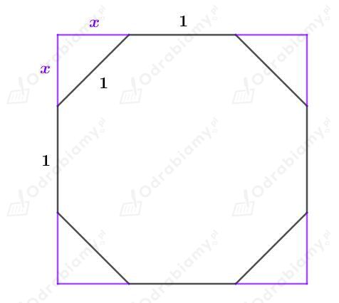
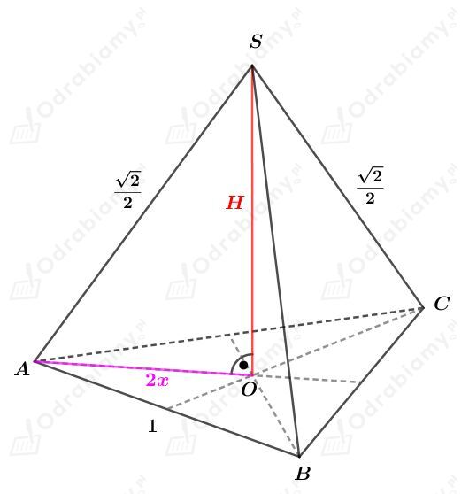
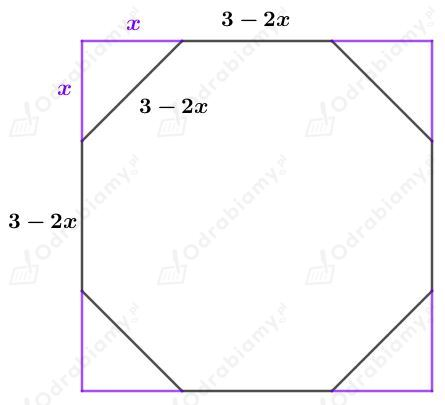

Dany jest sześcian ścięty o krawędzi długości 1 cm.
Naszkicujmy jedną ścianę tego sześcianu:

Korzystając ze wzoru na długość przekątnej kwadratu mamy:
Z narożników sześcianu wycięto ostrosłupy i otrzymano sześcian ścięty. Naszkicujmy wycięty ostrosłup:

Odcinek 2x stanowi 2/3 długości wysokości trójkąta równobocznego ABC. Korzystając ze wzoru na długość wysokości trójkąta równobocznego mamy:
Korzystając z twierdzenia Pitagorasa dla trójkąta AOS mamy:
Wyznaczmy objętość tego ostrosłupa. Mamy:
Obliczmy objętość sześcianu. Mamy:
Korzystając ze wzoru skróconego mnożenia na sześcian sumy mamy:
Wyznaczmy objętość sześcianu ściętego. Mamy:
Dany jest sześcian o krawędzi długości 3 cm. Z tego sześcianu odcinamy narożniki i otrzymujemy sześcian ścięty.
Naszkicujmy jedną ścianę tego sześcianu. Mamy:

Długość krawędzi sześcianu ściętego wynosi 3-2x. Musi być to wielkość dodatnia, czyli:
Otrzymany w narożniku trójkąt musi spełniać warunek istnienia trójkąta. Mamy zatem:
Zatem ostatecznie otrzymujemy:
Korzystając z twierdzenia Pitagorasa mamy:
Zauważmy, że x1 jest sprzeczne z założeniem, zatem ostatecznie mamy:
Wyznaczmy długość krawędzi tego sześcianu ściętego. Mamy: